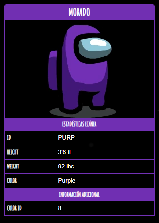

Morado

Morado
es uno de los colores de Among Us que los jugadores pueden personalizar.
Curiosidades
- Morado se muestra en tres fotos promocionales.
- Hubo un animación JAM con el tema de Among Us llamado "The Purple Impostor (El Impostor Morado)", que fue presentado por Newgrounds y juzgado por el equipo de Innersloth.
El tema de la animación es que Morado sea el Impostor, de ahí el título. Los ganadores de esta animación JAM recibieron premios en efectivo de $ 100 a $ 1,000.
- Morado aparece en la sección "Cómo jugar", caminando por el pasillo junto al Ala Médica en The Skeld , y se mostró una parte de su cuerpo donde el Impostor se mezclaba con la tripulación.